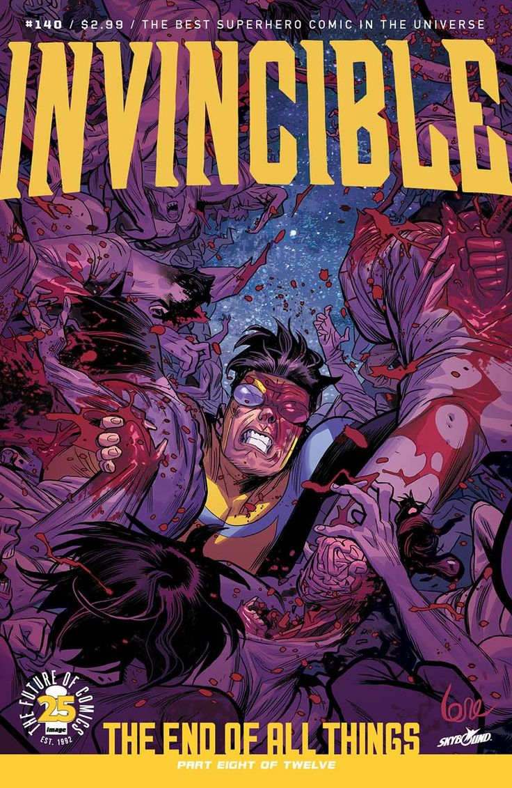

Los combates son extremadamente sangrientos
Uno de los sellos más distintivos de Invincible es su nivel extremo de violencia gráfica. Las peleas entre superhumanos no solo son explosivas, sino también viscerales: huesos rotos, órganos expuestos, decapitaciones… todo está al servicio de una narrativa que no oculta las consecuencias del poder desmedido.
Esta crudeza no es gratuita. Kirkman quiso mostrar cómo serían realmente las batallas entre seres con fuerza sobrehumana. A diferencia de otros cómics donde los edificios se destruyen pero nadie muere, aquí la destrucción tiene un costo humano claro y devastador. Cada golpe puede matar.
En la animación, esto se traduce en escenas impactantes que han quedado grabadas en la memoria colectiva, como la infame batalla del tren. Esta violencia despiadada no solo genera shock, sino que también hace que los momentos emocionales se sientan más reales. Porque en el mundo de Invincible, todo —incluido el dolor— importa.
← Volver a curiosidades de Invincible